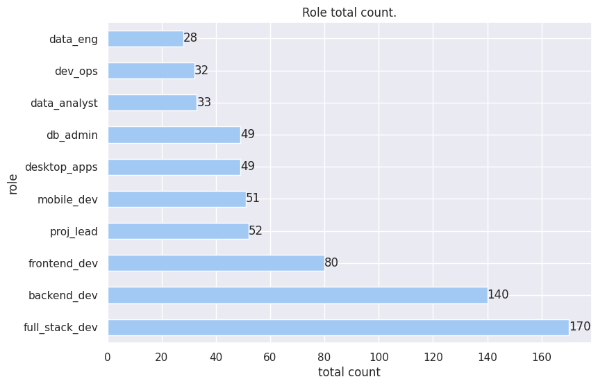

Empleo y condiciones de trabajo
#######################
# CONFIG ZONE
#######################
# Importing Libs
import pandas as pd
import seaborn as sns
import matplotlib.pyplot as plt
from collections import Counter
import numpy as np
# My Tools
import milanesas.eda_helper as eh
from tools.helpers import (
get_column_uniques,
get_column_uniques_count,
plot_grouped_by_category_barh_charts,
barh_chart_unique_values,
print_unique_normalized_values_by_group,
make_horizontal_grouped_chart,
make_vertical_grouped_chart,
grouped_grid_pie_chart,
grouped_grid_barh_chart,
create_grouped_dataframe_list,
uniques_count_to_dataframe,
barh_chart_normal_count,
plot_uniques_count,
barh_chart_count,
md_table,
print_code,
)
%matplotlib inline
# Reseting figure size params.
plt.rcParams["figure.figsize"] = [12, 7]
# Setting seaborn as default plotting lib.
sns.set()
sns.set_palette("pastel")
df = pd.read_csv("../data/data_fixed.csv")
df = df.drop("Unnamed: 0", axis=1)
df.columns
Index(['work_mode', 'employment_mode', 'role', 'prog_skills_in_role',
'code_for_job', 'IT_exp', 'prof_prog_exp', 'first_code',
'assigned_seniority', 'self_assessed_seniority', 'formal_edu', 'majors',
'formal_edu_importance', 'gender', 'age', 'monthly_salary',
'pro_languages', 'web_frameworks', 'other_tools', 'databases',
'platforms', 'fav_language', 'least_fav_language', 'fav_framework',
'least_fav_framework', 'tools', 'use_AI_tools', 'AI_replace_dev',
'layoffs_23_24', 'working_now', 'unemployed_duration', 'same_role',
'current_vs_prev_salary'],
dtype='object')
df["work_mode"]
0 remote
1 onsite
2 remote
3 Hibrído
4 remote
...
389 remote
390 Hibrído
391 remote
392 remote
393 onsite
Name: work_mode, Length: 394, dtype: object
2. Employment and Work Conditions
- Modalidad de trabajo
- Modalidad de empleo
- Puesto / rol
- ¿Utilizás habilidades de programación en alguno de los siguientes roles/puestos?
- ¿Codificás por trabajo?
- ¿Qué nivel te asignaron en tu trabajo?
- ¿Cuál considerás que es tu nivel en tu puesto?
Modalidad de trabajo
df.columns
Index(['work_mode', 'employment_mode', 'role', 'prog_skills_in_role',
'code_for_job', 'IT_exp', 'prof_prog_exp', 'first_code',
'assigned_seniority', 'self_assessed_seniority', 'formal_edu', 'majors',
'formal_edu_importance', 'gender', 'age', 'monthly_salary',
'pro_languages', 'web_frameworks', 'other_tools', 'databases',
'platforms', 'fav_language', 'least_fav_language', 'fav_framework',
'least_fav_framework', 'tools', 'use_AI_tools', 'AI_replace_dev',
'layoffs_23_24', 'working_now', 'unemployed_duration', 'same_role',
'current_vs_prev_salary'],
dtype='object')
df["work_mode"].value_counts()
work_mode
remote 152
onsite 133
Hibrído 103
none 6
Name: count, dtype: int64
md_table(
"work_mode_counts",
uniques_count_to_dataframe(df["work_mode"].value_counts()),
"Work mode total count.",
)
<center>
<a id="work_mode_counts_my6m5"></a>
| category | count |
|:-----------|--------:|
| remote | 152 |
| onsite | 133 |
| Hibrído | 103 |
| none | 6 |
<p style="text-align: center;"><em>Work mode total count.</em></p>
</center>
<br/>
<br/>
df["work_mode"].shape
(394,)
barh_chart_normal_count(
df, "work_mode", title="Work mode total count", xlabel="count", ylabel="Work Mode"
)

Modalidad de empleo
df.columns
Index(['work_mode', 'employment_mode', 'role', 'prog_skills_in_role',
'code_for_job', 'IT_exp', 'prof_prog_exp', 'first_code',
'assigned_seniority', 'self_assessed_seniority', 'formal_edu', 'majors',
'formal_edu_importance', 'gender', 'age', 'monthly_salary',
'pro_languages', 'web_frameworks', 'other_tools', 'databases',
'platforms', 'fav_language', 'least_fav_language', 'fav_framework',
'least_fav_framework', 'tools', 'use_AI_tools', 'AI_replace_dev',
'layoffs_23_24', 'working_now', 'unemployed_duration', 'same_role',
'current_vs_prev_salary'],
dtype='object')
get_column_uniques(df, "employment_mode")
['Empleador local (Paraguay)',
'foreign_employer',
'freelance',
'local_with_foreign_clients']
barh_chart_normal_count(
df,
"employment_mode",
title="Employment mode count",
xlabel="count",
ylabel="Employment Mode",
)
Puesto / rol
df.columns
Index(['work_mode', 'employment_mode', 'role', 'prog_skills_in_role',
'code_for_job', 'IT_exp', 'prof_prog_exp', 'first_code',
'assigned_seniority', 'self_assessed_seniority', 'formal_edu', 'majors',
'formal_edu_importance', 'gender', 'age', 'monthly_salary',
'pro_languages', 'web_frameworks', 'other_tools', 'databases',
'platforms', 'fav_language', 'least_fav_language', 'fav_framework',
'least_fav_framework', 'tools', 'use_AI_tools', 'AI_replace_dev',
'layoffs_23_24', 'working_now', 'unemployed_duration', 'same_role',
'current_vs_prev_salary'],
dtype='object')
# Assuming get_column_uniques_count returns a Series object
role_counts = get_column_uniques_count(df, "role")
# Se omiten valores con "un" solo resultado.
role_counts_df = uniques_count_to_dataframe(role_counts, 20)
role_counts
role
full_stack_dev 170
backend_dev 140
frontend_dev 80
proj_lead 52
mobile_dev 51
desktop_apps 49
db_admin 49
data_analyst 33
dev_ops 32
data_eng 28
qa_testing 27
ux_ui 14
data_sci 13
embedded_sys_dev 13
ai_specialist 10
game_dev 4
sys_analyst 2
qa_tester 1
cloud_dev 1
api_rest 1
tableau_dev 1
crm 1
team_lead 1
platform_dev 1
tech_lead 1
jr_electrical_eng 1
quality_analyst 1
it_auditor 1
platform_eng 1
analyst_qa 1
dba 1
software_arch 1
community_lead 1
it_analyst 1
solution_arch 1
tech_lead 1
ml_eng 1
backend_arch 1
sys_arch 1
support_analyst 1
sales 1
it 1
sys_coord 1
sre 1
digital_analyst 1
analyst 1
Name: count, dtype: int64
md_table("rolecount_table", role_counts_df, "Roles total counts.")
<center>
<a id="rolecount_table_wrwlr"></a>
| category | count |
|:-----------------|--------:|
| full_stack_dev | 170 |
| backend_dev | 140 |
| frontend_dev | 80 |
| proj_lead | 52 |
| mobile_dev | 51 |
| desktop_apps | 49 |
| db_admin | 49 |
| data_analyst | 33 |
| dev_ops | 32 |
| data_eng | 28 |
| qa_testing | 27 |
| ux_ui | 14 |
| data_sci | 13 |
| embedded_sys_dev | 13 |
| ai_specialist | 10 |
| game_dev | 4 |
| sys_analyst | 2 |
| qa_tester | 1 |
| cloud_dev | 1 |
| api_rest | 1 |
<p style="text-align: center;"><em>Roles total counts.</em></p>
</center>
<br/>
<br/>
barh_chart_normal_count(df, "role", "Role total count.", "total count", "role")

Modalidad vs Seniority asignado.
df.columns
Index(['work_mode', 'employment_mode', 'role', 'prog_skills_in_role',
'code_for_job', 'IT_exp', 'prof_prog_exp', 'first_code',
'assigned_seniority', 'self_assessed_seniority', 'formal_edu', 'majors',
'formal_edu_importance', 'gender', 'age', 'monthly_salary',
'pro_languages', 'web_frameworks', 'other_tools', 'databases',
'platforms', 'fav_language', 'least_fav_language', 'fav_framework',
'least_fav_framework', 'tools', 'use_AI_tools', 'AI_replace_dev',
'layoffs_23_24', 'working_now', 'unemployed_duration', 'same_role',
'current_vs_prev_salary'],
dtype='object')
grouped_grid_barh_chart(
df.groupby("work_mode"),
"self_assessed_seniority",
'Modalidad vs. "self" assessed seniority ',
2,
2,
"gray",
8.5,
)
grouped_grid_barh_chart(
df.groupby("work_mode"),
"assigned_seniority",
"Modalidad vs. assessed seniority ",
5,
1,
"gray",
8.5,
)

Modalidad vs Seniority auto asignado.
¿Utilizás habilidades de programación en alguno de los siguientes roles/puestos?
# Get column uniques.
prog_in_rol_uniques = get_column_uniques(df, "prog_skills_in_role")
prog_in_rol_uniques
['devops_dataops',
'scientific_researcher',
'sys_admin',
'designer',
nan,
'educator']
df["prog_skills_in_role"].value_counts()
prog_skills_in_role
sys_admin 72
devops_dataops 57
sys_admin, devops_dataops 37
designer 19
sys_admin, educator 12
sys_admin, designer 11
educator 9
scientific_researcher 6
sys_admin, devops_dataops, scientific_researcher 6
devops_dataops, scientific_researcher 5
sys_admin, scientific_researcher, educator 4
sys_admin, scientific_researcher 4
sys_admin, devops_dataops, designer 3
devops_dataops, designer 3
sys_admin, devops_dataops, educator 3
scientific_researcher, educator 2
devops_dataops, educator 1
scientific_researcher, designer, educator 1
sys_admin, devops_dataops, scientific_researcher, designer, educator 1
sys_admin, scientific_researcher, designer 1
sys_admin, devops_dataops, scientific_researcher, designer 1
Name: count, dtype: int64
# Obtenemos el conteo total por categoria.
prog_in_role_count = get_column_uniques_count(df, "prog_skills_in_role")
prog_in_role_df = uniques_count_to_dataframe(prog_in_role_count, 10)
prog_in_role_df
|
category |
count |
| 0 |
sys_admin |
155 |
| 1 |
devops_dataops |
117 |
| 2 |
designer |
40 |
| 3 |
educator |
33 |
| 4 |
scientific_researcher |
31 |
prog_in_role_df.columns
Index(['category', 'count'], dtype='object')
md_table(
"programming_in_role_table",
prog_in_role_df,
"Programming in role.\n <p class='table_subtitle'>(Needs to program in role?)<p></em></p> ")
<center>
<a id="programming_in_role_table_9RrMm"></a>
| category | count |
|:----------------------|--------:|
| sys_admin | 155 |
| devops_dataops | 117 |
| designer | 40 |
| educator | 33 |
| scientific_researcher | 31 |
<p style="text-align: center;"><em>Programming in role.
<p class='table_subtitle'>(Needs to program in role?)<p></em></p> </em></p>
</center>
<br/>
<br/>
plot_uniques_count(prog_in_role_df, "Programming in role.", "count", "role")

¿Codificás por trabajo?
# Unique values in column.
get_column_uniques(df, "code_for_job")
['Yes', 'No']
prog_in_job_count = get_column_uniques_count(df, "code_for_job")
cod_for_job_df = uniques_count_to_dataframe(prog_in_job_count)
cod_for_job_df
|
category |
count |
| 0 |
Yes |
355 |
| 1 |
No |
39 |
md_table("coding_for_job_table", cod_for_job_df, "Coding for job.")
<center>
<a id="coding_for_job_table_hAFua"></a>
| category | count |
|:-----------|--------:|
| Yes | 355 |
| No | 39 |
<p style="text-align: center;"><em>Coding for job.</em></p>
</center>
<br/>
<br/>
plot_uniques_count(cod_for_job_df, "Code for job.\n", "count", "Response")
¿Qué nivel te asignaron en tu trabajo?
# Get unique values in column.
get_column_uniques(df, "assigned_seniority")
['Mid-senior',
'Junior',
'Senior',
'Principal',
'No aplica a mi lugar de trabajo',
'Trainee',
'Staff']
get_column_uniques_count(df, "assigned_seniority")
assigned_seniority
Senior 161
Mid-senior 79
Junior 58
No aplica a mi lugar de trabajo 56
Principal 17
Staff 17
Trainee 6
Name: count, dtype: int64
len(df["assigned_seniority"])
394
df["assigned_seniority"]
0 Mid-senior
1 Junior
2 Senior
3 Principal
4 Senior
...
389 Senior
390 Mid-senior
391 Senior
392 Junior
393 Senior
Name: assigned_seniority, Length: 394, dtype: object
assigned_seniority_df = uniques_count_to_dataframe(
get_column_uniques_count(df, "assigned_seniority")
)
md_table(
"assigned_senirity_table",
assigned_seniority_df,
"Assigned seniority.")
<center>
<a id="assigned_senirity_table_XyEjR"></a>
| category | count |
|:--------------------------------|--------:|
| Senior | 161 |
| Mid-senior | 79 |
| Junior | 58 |
| No aplica a mi lugar de trabajo | 56 |
| Principal | 17 |
| Staff | 17 |
| Trainee | 6 |
<p style="text-align: center;"><em>Assigned seniority.</em></p>
</center>
<br/>
<br/>
plot_uniques_count(
assigned_seniority_df,
"Assigned seniority count.",
"Assigned Seniority",
"Total Count",
)

¿Cuál considerás que es tu nivel en tu puesto?
# Obtener los valores unicos de la columna.
get_column_uniques(df, "self_assessed_seniority")
['Junior',
'Senior',
'Principal',
'Mid-senior',
'Trainee',
'Desconozco',
'Staff']
# Obtener el conteo total de la columns.
self_assigned_seniority_df = uniques_count_to_dataframe(
get_column_uniques_count(df, "self_assessed_seniority")
)
md_table(
"self_assessed_seniority_table",
self_assigned_seniority_df,
"Self assessed seniority.",
)
<center>
<a id="self_assessed_seniority_table_smXEJ"></a>
| category | count |
|:-----------|--------:|
| Senior | 164 |
| Mid-senior | 121 |
| Junior | 48 |
| Principal | 24 |
| Staff | 16 |
| Desconozco | 13 |
| Trainee | 8 |
<p style="text-align: center;"><em>Self assessed seniority.</em></p>
</center>
<br/>
<br/>
self_assigned_seniority_df = uniques_count_to_dataframe(
get_column_uniques_count(df, "self_assessed_seniority")
)
plot_uniques_count(
self_assigned_seniority_df,
"Self Assigned seniority count.",
"Self Assigned Seniority",
"Total Count",
)

{kind=link}
{kind=link}
{kind=link}
{kind=link}